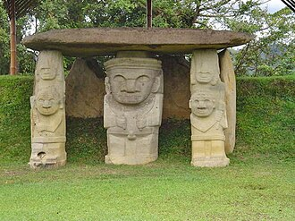
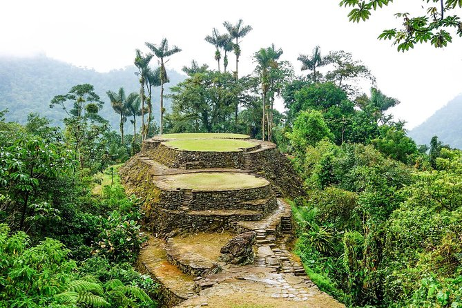
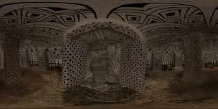
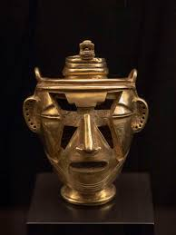
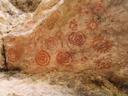
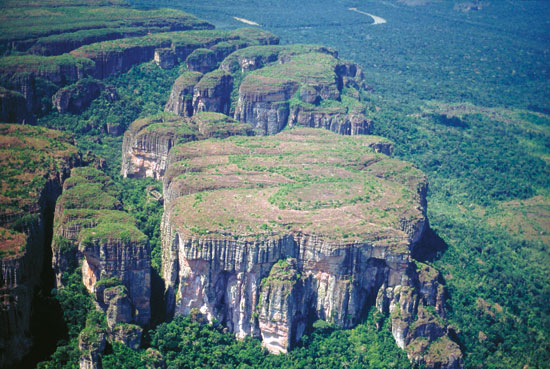

Reliquia 1

Parque Arqueológico de San Agustín
Más de 500 estatuas megalíticas que adornan tumbas y monumentos en el altiplano andino.
Fecha estimada: 100 d.C. – 900 d.C.Monumentales esculturas que representan figuras humanas y animales en el suroeste colombiano.
Más información sobre las reliquias colombianas...

Más de 500 estatuas megalíticas que adornan tumbas y monumentos en el altiplano andino.
Fecha estimada: 100 d.C. – 900 d.C.
Ruinas de una antigua ciudad tayrona en la Sierra Nevada de Santa Marta, con terrazas y caminos empedrados.
Fecha estimada: 800 d.C. – 1600 d.C.
Tumbas subterráneas decoradas con pinturas y esculturas en el departamento del Cauca.
Fecha estimada: 600 d.C. – 900 d.C.
Artefactos de oro finamente trabajados, incluyendo figuras zoomorfas y antropomorfas de la cultura Quimbaya.
Fecha estimada: 300 a.C. – 700 d.C.
Grabados rupestres en piedras que representan símbolos y figuras en Boyacá.
Fecha estimada: 500 a.C. – 1500 d.C.
Pinturas rupestres en cuevas de la Amazonía colombiana, declaradas Patrimonio de la Humanidad.
Fecha estimada: 20000 a.C. – 1000 d.C.